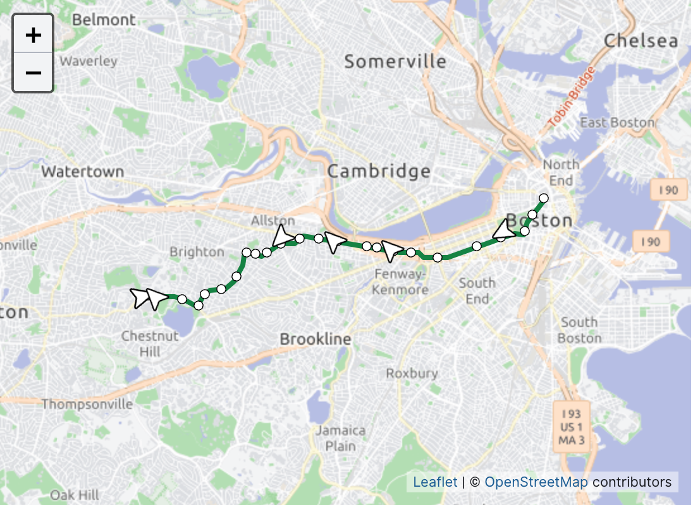
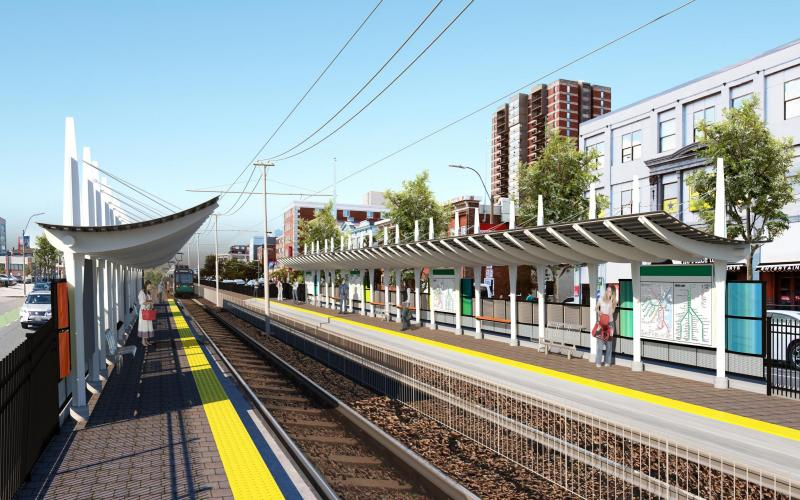

Government Center
Park Street
Boylston
Arlington
Copley
Hynes Convention Center
Kenmore
Blandford Street
Boston University East
Boston University Central
Amory Street
Babcock Street
Packard's Corner
Harvard Avenue
Griggs Street
Allston Street
Warren Street
Washington Street
Sutherland Road
Chiswick Road
Chestnut Hill Avenue
South Street
Boston College
Maps
Today's Service
First & last trains
5:01 AM | 12:16 AM
Peak Service: Trains depart every 6 – 8 minutes
Off-Peak Service: Trains depart every 7 – 12 minutes

Green Line B Branch Station Consolidation
We consolidated four B Branch stops into two fully accessible, brand-new stations—Babcock
Street and Amory Street.
News
APRIL 25, 2024
MBTA Extends Blue Line Track Work Through April 30